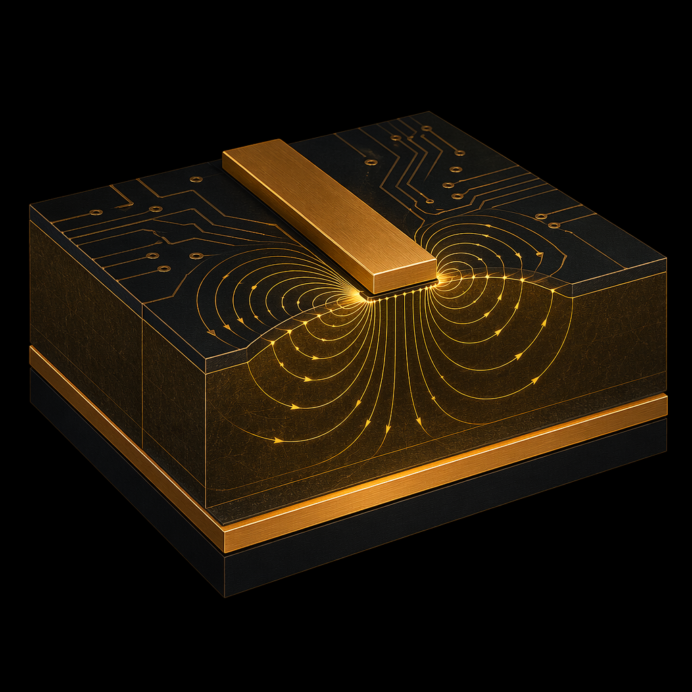
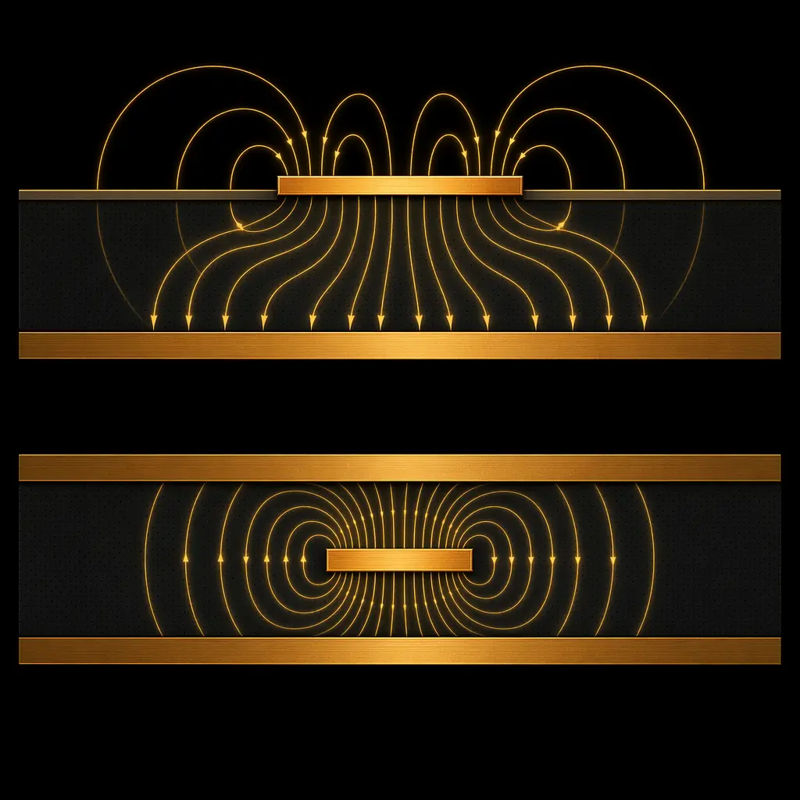
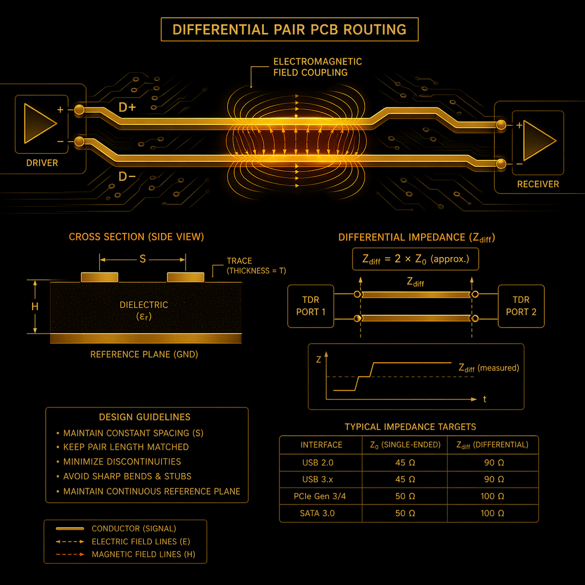
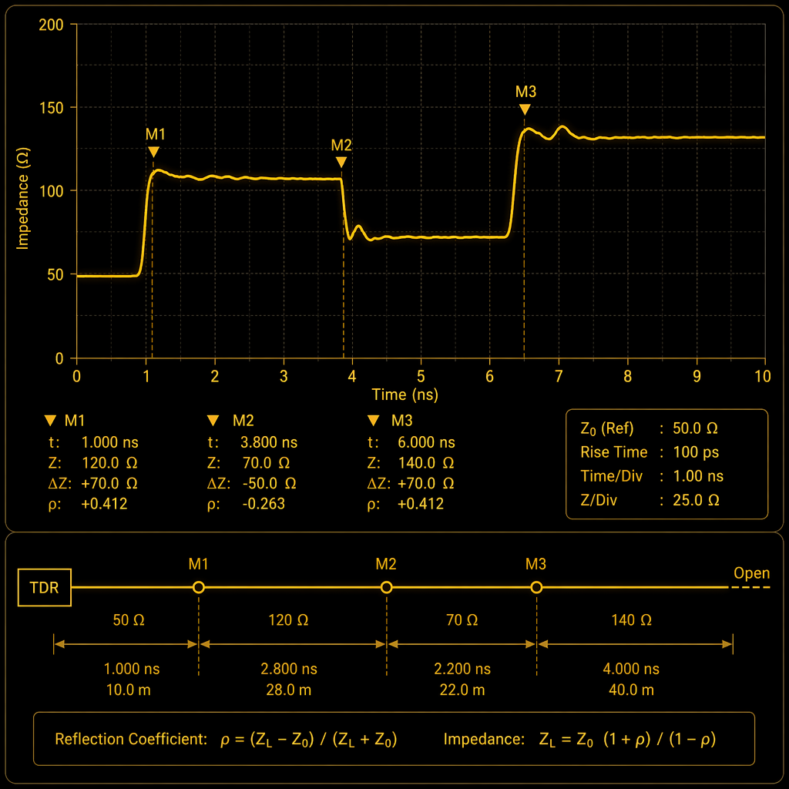

At 1GHz, a 10% impedance mismatch causes a -20dB return loss. At 5GHz, that same mismatch costs you -15dB. At 28GHz (5G mmWave), it's -10dB — enough to make a high-speed link fail entirely. Controlled impedance is no longer optional for any design with DDR4, PCIe Gen4/5, USB 3.2, HDMI 2.1, or RF signals. It's table stakes.
At Huaxing PCBA, we manufacture controlled-impedance PCBs with ±5% tolerance on every impedance-controlled trace, verified by TDR on every panel. Here's what actually determines impedance — and what you can control as a designer.

What Actually Determines Impedance
Characteristic impedance (Z₀) of a PCB trace is determined by exactly four variables. No more, no less:
1. Trace width (W). Wider trace = lower impedance. A 50Ω microstrip on standard FR-4 (Dk=4.2, 0.2mm dielectric to reference plane) requires approximately 0.36mm trace width. Change the width by ±10% and impedance shifts by roughly ±5%.
2. Dielectric thickness (H). Thicker dielectric between trace and reference plane = higher impedance. This is the variable with the most leverage — and the one most affected by lamination process variation. A 10% change in prepreg thickness produces a 6–8% shift in impedance.
3. Dielectric constant (Dk). Higher Dk = lower impedance. Standard FR-4 has Dk ≈4.2 at 1GHz; high-speed materials like Rogers 4350B are 3.48 ±0.05. The tolerance matters: FR-4 Dk varies ±0.2 between batches; Rogers varies ±0.05. That's the difference between hitting ±5% impedance and ±10%.
4. Copper thickness (T). Thicker copper = slightly lower impedance (more capacitance to the reference plane). This is a second-order effect below 5GHz but becomes meaningful above 10GHz where skin depth concentrates current at the trace surface.
Critical insight: Impedance depends on the ratio of W/H, not the absolute values. A 0.36mm trace on 0.2mm dielectric produces the same impedance as a 0.18mm trace on 0.1mm dielectric. This is why moving to thinner dielectrics — a common high-density strategy — requires proportionally narrower traces, which increases conductor loss. There is no free lunch in impedance design.
Microstrip vs Stripline: The 30% Difference
A 50Ω microstrip (trace on outer layer, one reference plane) is approximately 30% wider than a 50Ω stripline (trace buried between two reference planes) on the same dielectric. This is because microstrip's fields partially travel through air (Dk=1), while stripline fields travel entirely through the PCB dielectric (Dk≈4). The effective Dk for microstrip is ~3.0 — the average of the substrate and air — which lowers the capacitance per unit length and raises the impedance for a given width.
Design rule: Microstrip for outer-layer high-speed signals where you want wider, lower-loss traces. Stripline for inner-layer signals where you need isolation from external EMI and can accept the narrower trace width. Never route a critical high-speed signal that transitions from microstrip to stripline without a 3D EM simulation of the via transition — that via is an impedance discontinuity that will reflect energy.

Differential Pairs: 100Ω Doesn't Mean Two 50Ω Lines
A common misconception: "If I need 100Ω differential impedance, I'll just use two 50Ω single-ended traces." Wrong. Differential impedance depends on the coupling between the two traces — the edge-to-edge spacing. Tightly coupled pairs (S < W) behave differently from loosely coupled pairs (S > 2W). A 100Ω differential pair might use two 55–60Ω single-ended traces with specific spacing, not two 50Ω traces.
Differential impedance (Zdiff) ≈ 2 × Zodd, where Zodd is the odd-mode impedance of each trace (the impedance of one trace when the pair is driven differentially). Zodd is always lower than Z₀ because of mutual coupling. The tighter the coupling, the further Zodd deviates from Z₀. Your field solver handles this math — the point is that you cannot design differential pairs by designing two independent 50Ω traces and hoping they sum to 100Ω.

Why ±5% — And When ±10% Is Acceptable

At Huaxing PCBA, our standard impedance control tolerance is ±10%, with ±5% available as a premium option. The difference comes down to process controls: ±10% uses standard laminate Dk values from the manufacturer datasheet; ±5% requires measuring the actual Dk of each laminate batch (dielectric constant varies batch-to-batch) and adjusting trace width for that specific batch. It adds approximately 8–12% to the PCB cost but is mandatory for:
- PCIe Gen 4 (16 GT/s) and Gen 5 (32 GT/s)
- DDR5 memory interfaces (4800+ MT/s)
- USB 3.2 Gen 2×2 (20 Gbps) and USB4 (40 Gbps)
- Any RF design above 10GHz
- Backplane links longer than 300mm
±10% is acceptable for DDR4 (<3200 MT/s), PCIe Gen 3, USB 3.0, HDMI 2.0, and most sub-5GHz applications where link margins are sufficient to absorb the reflection.
Material Choice for Impedance-Critical Designs
±0.05
Standard FR-4 has a Dk tolerance of approximately ±0.2 between production batches. For ±10% impedance control, that's acceptable. For ±5%, you need a material with tighter Dk tolerance: Rogers 4350B (±0.05), Isola I-Speed (±0.05), or Panasonic Megtron 6 (±0.04). These materials cost 3–5× more than FR-4 but eliminate the batch-to-batch Dk variation that dominates impedance error.
For mixed-stackup designs, we often use a hybrid approach: Rogers or Megtron for the high-speed layers, standard FR-4 for power and low-speed layers. This captures most of the performance benefit at roughly half the material cost of an all-premium stackup.
The TDR Verification Guarantee
Every impedance-controlled panel manufactured at Huaxing PCBA includes a test coupon — a small PCB section on the same panel with representative trace structures — that we measure with TDR (Time Domain Reflectometry). The coupon includes 50Ω single-ended and 100Ω differential structures. We measure impedance at the coupon, not at the board, because the coupon is physically adjacent on the same panel and sees the same plating and etching conditions.
Our TDR equipment (Tektronix DSA8300) resolves impedance discontinuities down to 1mm spatial resolution. Any coupon failing the specified tolerance triggers a 100% panel inspection — not just a coupon retest. This is the difference between statistical process control and hope.
The Bottom Line
Impedance control is a manufacturing discipline, not a design checkbox. It requires the right material choice, trace geometry calculated for the actual (not nominal) Dk, and TDR verification on every panel. At Huaxing PCBA, we've invested in the materials inventory, process controls, and measurement equipment to deliver ±5% impedance tolerance as a standard premium option — not a special request that requires quoting a different factory. If your design has impedance-controlled traces, include the target impedance and tolerance on your fabrication drawing. Our engineering team will propose the stackup, trace widths, and materials to hit it.